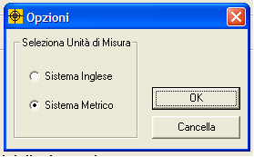

Unità di misura
ProFume
Fumiguide funziona con le unità inglesi e metriche. Andate su Visualizza nella barra degli strumenti in alto e selezionate "Opzioni". Quindi selezionate le unità inglesi o metriche. Potete cambiare le unità di un lavoro in qualsiasi momento, seguendo le medesime istruzioni.
